Våpen, verktøy og ammunisjon
Våpen, verktøy og ammunisjon i Valheim – 200 gjenstander med biom, funnsted, nødvendig verktøy, oppskrift og bruk.
Ingen gjenstand funnet.
 Armbrøst
Armbrøst
Et tregt men kraftig våpen.
Slik får du den
 Bane
Bane
Dette mektige sverdet lengter etter fiendeblod.
Slik får du den
- Lag: Svartsmie (nivå 3) av 30 ×
 Flammetall, 5 ×
Flammetall, 5 ×  Asksvinskinn, 3 ×
Asksvinskinn, 3 ×  Morgensene · per oppgradering: 15 × Flammetall, 5 × Asksvinskinn, 3 × Morgensene
Morgensene · per oppgradering: 15 × Flammetall, 5 × Asksvinskinn, 3 × Morgensene
Brukes til
- Ingrediens i: Blodsbane, Dunderbane, Villbane
 Barkespyd
Barkespyd
Til tross for det krokete utseende, er dette spydet sterkt og perfekt balansert.
Slik får du den
- Lag: Smie (nivå 3) av 4 ×
 Trollskinn, 10 ×
Trollskinn, 10 ×  Jern, 10 ×
Jern, 10 ×  Eldgammel bark · per oppgradering: 1 × Trollskinn, 5 × Jern, 5 × Eldgammel bark
Eldgammel bark · per oppgradering: 1 × Trollskinn, 5 × Jern, 5 × Eldgammel bark
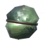
BasaltbombeMed nok varme, stivner den når den eksploderer.
Slik får du den
- Lag: 5 × Sløydbenk av 1 × Asksvinskinn, 1 ×
 Asksvinblære, 3 ×
Asksvinblære, 3 ×  Arsenikkpulver
Arsenikkpulver
 Beinbolt
Beinbolt
En uflidd bolt av gulnet bein.
Slik får du den
- Lag: 20 × Svartsmie av 8 ×
 Beinrester, 2 ×
Beinrester, 2 ×  Fjær
Fjær
 Berserkøkser
Berserkøkser
Gi deg selv til raseriet, og la blodet sprute.
Slik får du den
- Lag: Svartsmie (nivå 3) av 15 ×
 Kullgjort bein, 24 × Flammetall, 3 × Asksvinskinn · per oppgradering: 15 × Flammetall, 1 × Asksvinskinn
Kullgjort bein, 24 × Flammetall, 3 × Asksvinskinn · per oppgradering: 15 × Flammetall, 1 × Asksvinskinn
Brukes til
- Ingrediens i: Blodige berserkøkser, Tordnende berserkøkser, Ville berserkøkser
 Bjørnens poter
Bjørnens poter
Lagd for riving og sliting.
Slik får du den
- Lag: Sløydbenk (nivå 2) av 2 ×
 Bjørneskinn, 2 ×
Bjørneskinn, 2 ×  Bjørnelabb, 4 ×
Bjørnelabb, 4 ×  Restelær · per oppgradering: 2 × Bjørneskinn, 2 × Restelær
Restelær · per oppgradering: 2 × Bjørneskinn, 2 × Restelær
 Blob Bomb: Pulp
Blob Bomb: Pulp
A dungeon is where the blob is.
Slik får du den
- Lag: Sløydbenk av 1 ×
 Korket flaske, 1 ×
Korket flaske, 1 ×  Pulp Trophy, 3 ×
Pulp Trophy, 3 ×  Dead Pulp
Dead Pulp
 Blobbombe: Elitegift
Blobbombe: Elitegift
Det frarådes å innånde dampen.
Slik får du den
- Lag: Sløydbenk av 1 × Korket flaske, 3 ×
 Blobbtrofé, 3 ×
Blobbtrofé, 3 ×  Kvae
Kvae
 Blobbombe: Frost
Blobbombe: Frost
Om du holder den for lenge, kan det hende at hånda di fryser fast.
Slik får du den
- Lag: Sløydbenk av 1 × Korket flaske, 1 ×
 Draketrofé, 3 × Kvae
Draketrofé, 3 × Kvae
 Blobbombe: Gift
Blobbombe: Gift
Skulle denne flasken knuses, anbefales det sterkt å være varsom.
Slik får du den
- Lag: Sløydbenk av 1 × Korket flaske, 1 × Blobbtrofé, 3 × Kvae
 Blobbombe: Lava
Blobbombe: Lava
Flasken er varm i hånda, den byr på ødeleggende flammer.
Slik får du den
- Lag: Sløydbenk av 1 × Korket flaske, 10 ×
 Svovel, 10 × Arsenikkpulver
Svovel, 10 × Arsenikkpulver
 Blobbombe: Tjære
Blobbombe: Tjære
Det klebrige innholdet pulserer, som om det truer deg.
Slik får du den
- Lag: Sløydbenk av 1 × Korket flaske, 1 ×
 Svulsttrofé, 3 ×
Svulsttrofé, 3 ×  Tjære
Tjære
 Blodhogg
Blodhogg
Piler fra denne buen flerrer opp kjøtt med en uslåelig grusomhet.
Slik får du den
- Lag: Svartsmie (nivå 4) av 1 ×
 Kullhogg, 5 × Flammetall, 1 ×
Kullhogg, 5 × Flammetall, 1 ×  Blodstein · per oppgradering: 5 × Flammetall, 1 × Blodstein
Blodstein · per oppgradering: 5 × Flammetall, 1 × Blodstein
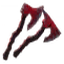
Blodige berserkøkserJo nærmere døden du er, desto hardere slår du.
Slik får du den
- Lag: Svartsmie (nivå 4) av 1 × Berserkøkser, 5 × Flammetall, 1 × Blodstein · per oppgradering: 5 × Flammetall, 1 × Blodstein
 Blodriver
Blodriver
Står klar til å rive fiender i fillebiter.
Slik får du den
- Lag: Svartsmie (nivå 4) av 1 ×
 River, 8 × Flammetall, 1 × Blodstein · per oppgradering: 8 × Flammetall, 1 × Blodstein
River, 8 × Flammetall, 1 × Blodstein · per oppgradering: 8 × Flammetall, 1 × Blodstein
 Blodsbane
Blodsbane
Alt som blør, kan drepes.
Slik får du den
- Lag: Svartsmie (nivå 4) av 1 × Bane, 15 × Flammetall, 1 × Blodstein · per oppgradering: 15 × Flammetall, 1 × Blodstein
 Blodslegge
Blodslegge
Denne sleggen suger til seg alt den kan av blod, men tørsten slukkes aldri.
Slik får du den
- Lag: Svartsmie (nivå 4) av 1 ×
 Flammetallklubbe, 8 × Flammetall, 1 × Blodstein · per oppgradering: 8 × Flammetall, 1 × Blodstein
Flammetallklubbe, 8 × Flammetall, 1 × Blodstein · per oppgradering: 8 × Flammetall, 1 × Blodstein
 Bloodgold Arrow
Bloodgold Arrow
An arrow forged of perhaps the hardest materials in this world...
Slik får du den
 Bloodgold Bolt
Bloodgold Bolt
A bolt forged of perhaps the hardest materials in this world...
Slik får du den
 Bloodgold Missile
Bloodgold Missile
Your attacker shall stand no chance as this missile finds its target.
Slik får du den
 Broddpil
Broddpil
Det siste stikk.
Slik får du den
 Bronseatgeir
Bronseatgeir
En ekte krigers redskap.
Slik får du den
 Bronsehakke
Bronsehakke
Ei god bronsehakke. Kan bryte veldig harde steiner.
Slik får du den
 Bronseklubbe
Bronseklubbe
Hodepine på pinne.
Slik får du den
 Bronsepil
Bronsepil
Skarpere enn flint. En polert budbringer om død.
Slik får du den
 Bronsespyd
Bronsespyd
Et solid spyd med hode av polert bronse.
Slik får du den
- Lag: Smie av 5 ×
 Treverk, 6 ×
Treverk, 6 ×  Bronse, 2 ×
Bronse, 2 ×  Hjorteskinn · per oppgradering: 3 × Treverk, 4 × Bronse, 1 × Hjorteskinn
Hjorteskinn · per oppgradering: 3 × Treverk, 4 × Bronse, 1 × Hjorteskinn
 Bronsesverd
Bronsesverd
Bloddrikker, en tørst venn.
Slik får du den
 Bronseøks
Bronseøks
Et blankt og polert blad, buet som et smil.
Slik får du den
 Bruddstav
Bruddstav
Kun de med tålmodighet og fokus vil kunne kalle på stavens skjulte kraft.
Slik får du den
- Lag: Galderbord (nivå 2) av 15 × Kullgjort bein, 5 ×
 Askeved, 8 × Arsenikkpulver · per oppgradering: 5 × Kullgjort bein, 3 × Askeved, 1 × Arsenikkpulver
Askeved, 8 × Arsenikkpulver · per oppgradering: 5 × Kullgjort bein, 3 × Askeved, 1 × Arsenikkpulver
 Bukkbryter
Bukkbryter
Et våpen verdig gudene! Blir du truffet med denne, så kjenner du det...
Slik får du den
- Lag: Sløydbenk (nivå 2) av 20 ×
 Kjerneved, 5 ×
Kjerneved, 5 ×  Hjortetrofé, 2 × Restelær · per oppgradering: 5 × Kjerneved, 2 × Hjortetrofé, 1 × Restelær, 10 × Beinrester
Hjortetrofé, 2 × Restelær · per oppgradering: 5 × Kjerneved, 2 × Hjortetrofé, 1 × Restelær, 10 × Beinrester
 Draugtann
Draugtann
Mørkt tre spent med en glinsende sene. En grusom sak.
Slik får du den
- Lag: Smie (nivå 2) av 10 × Eldgammel bark, 20 ×
 Sølv, 2 × Hjorteskinn, 10 ×
Sølv, 2 × Hjorteskinn, 10 ×  Gørr · per oppgradering: 5 × Eldgammel bark, 10 × Sølv, 2 × Hjorteskinn, 2 × Gørr
Gørr · per oppgradering: 5 × Eldgammel bark, 10 × Sølv, 2 × Hjorteskinn, 2 × Gørr
 Dunder
Dunder
Det som skjedde etterpå kan virke sjokkerende.
Slik får du den
- Lag: Galderbord (nivå 2) av 10 × Askeved, 4 × Flammetall, 3 ×
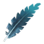
Himmelsk fjær, 1 ×Blodstein · per oppgradering: 5 × Askeved, 2 × Flammetall, 3 × Himmelsk fjær, 1 × Blodstein
 Dunderbane
Dunderbane
Lynet bundet i denne klingen er voldelig, evig ute etter noe å slå i.
Slik får du den
- Lag: Svartsmie (nivå 4) av 1 × Bane, 15 × Flammetall, 1 ×
 Iolitt · per oppgradering: 15 × Flammetall, 1 × Iolitt
Iolitt · per oppgradering: 15 × Flammetall, 1 × Iolitt
 Dvergisk krus
Dvergisk krus
Det kan romme masse mjød!
Slik får du den
- Kister: Infisert gruve · 6,3 % sjanse
- Plukk opp: Dvergr-vakttårn, Dvergr-fyrtårn, Dronningen
 Dverglykt
Dverglykt
En enkel fakkel ville vært alt for gammeldags.
Slik får du den
- Lag: Svartsmie av 2 × Bronse, 1 ×
 Surtlingkjerne, 1 ×
Surtlingkjerne, 1 ×  Krystall
Krystall - Plukk opp: Dvergr-utgraving, Dvergr-vakttårn, Forkullet tårnruin, Dvergr-fyrtårn, Dronningen
Brukes til
- Byggemateriale til: Dvergisk lyktestolpe, Dvergisk vegglykt
 Dyphavsharpun
Dyphavsharpun
Havets vrede.
Slik får du den
 Dyphavskniv
Dyphavskniv
En kniv fra dypet.
Slik får du den
 Dyrker
Dyrker
Et gårdsverktøy for dyrking av jord.
Slik får du den
 Dyrnwyn
Dyrnwyn
Sverdet engang ødelagt er helt igjen. Ilden brenner hett, matet av minner fra eldgamle krigere.
Slik får du den
- Lag: Svartsmie (nivå 4) av 1 ×
 Hjaltebit av Dyrnwyn, 1 ×
Hjaltebit av Dyrnwyn, 1 ×  Klingebit av Dyrnwyn, 1 ×
Klingebit av Dyrnwyn, 1 ×  Spissbit av Dyrnwyn, 20 × Flammetall, 1 × Blodstein · per oppgradering: 10 × Flammetall, 1 × Blodstein
Spissbit av Dyrnwyn, 20 × Flammetall, 1 × Blodstein · per oppgradering: 10 × Flammetall, 1 × Blodstein
 Dødsmaner
Dødsmaner
Ofre litt blod for å vekke de døde. Oppgrader hodeskallen for å mane frem flere skjeletter, og styrk blodmagien din for å gjøre dem sterkere.
Slik får du den
- Lag: Galderbord av 10 × Beinrester, 16 ×
 Raffinert eiter, 4 ×
Raffinert eiter, 4 ×  Skjelettrofé · per oppgradering: 5 × Beinrester, 8 × Raffinert eiter, 2 × Skjelettrofé
Skjelettrofé · per oppgradering: 5 × Beinrester, 8 × Raffinert eiter, 2 × Skjelettrofé
 Echo Spike
Echo Spike
A chill that goes right through to the bone.
Slik får du den
- Lag: Galderbord (nivå 3) av 10 ×
 Bloodgold, 4 ×
Bloodgold, 4 ×  Nornathread, 1 ×
Nornathread, 1 ×  Frostfire Essence · per oppgradering: 5 × Bloodgold, 2 × Nornathread, 1 × Frostfire Essence
Frostfire Essence · per oppgradering: 5 × Bloodgold, 2 × Nornathread, 1 × Frostfire Essence - Stek: Froststøper av
 Cast: Echo Spike
Cast: Echo Spike
 Ember Charge
Ember Charge
Trapped embers, ready to burst. Caution is advised.
Slik får du den
 Fakkel
Fakkel
Den skaper lys og varme og driver mørket tilbake.
Slik får du den
- Lag: uten arbeidsbenk av 1 × Treverk, 1 × Kvae
- Kister: Skipssetning (grav) · 53 % sjanse, Landsby i nord · 53 % sjanse, Hytte (Nord) · 52 % sjanse, Tømmerhoggerleir · 52 % sjanse, Kampruin · 50 % sjanse, Forlatt trehus · 28–36 % sjanse, Forlatt gård · 36 % sjanse, Draugr-landsby · 36 % sjanse
 Festhorn
Festhorn
Ett år siden vi ankom... Skål!
Slik får du den
- Lag: Sløydbenk av 2 × Bronse, 2 × Trollskinn, 2 × Jern
 Finvedsbue
Finvedsbue
En enkel bue av sterkt og smidig treverk.
Slik får du den
- Lag: Sløydbenk av 10 ×
 Finved, 10 × Kjerneved, 2 × Hjorteskinn · per oppgradering: 5 × Finved, 5 × Kjerneved, 2 × Hjorteskinn
Finved, 10 × Kjerneved, 2 × Hjorteskinn · per oppgradering: 5 × Finved, 5 × Kjerneved, 2 × Hjorteskinn
 Fiskeagn
Fiskeagn
Alminnelig agn brukt av dvergene. Fiskestang solgt separat.
Slik får du den
Brukes til
- Ingrediens i: Frossent agn, Glovarmt agn, Kaldt agn, Klissete agn, Mosete agn, Stikkende agn, Tungt agn, Tåkete agn
- Agn for: Gjedde, Tryte
 Fiskestang
Fiskestang
En alminnelig dvergisk fiskestang.
Slik får du den
Flammetallklubbe
Massivt og piggete flammetall, perfekt for å knuse skallen på noen.
Slik får du den
- Lag: Svartsmie (nivå 3) av 10 × Kullgjort bein, 15 × Flammetall, 5 × Svovel, 3 × Asksvinskinn · per oppgradering: 5 × Kullgjort bein, 8 × Flammetall, 3 × Svovel, 2 × Asksvinskinn
Brukes til
- Ingrediens i: Blodslegge, Klossen, Stormstjerne
 Flintkniv
Flintkniv
Skjerpet flint. Et pålitelig verktøy.
Slik får du den
 Flintpil
Flintpil
En skinnflerrer med et hode av flint.
Slik får du den
- Lag: 20 × Sløydbenk (nivå 2) av 8 × Treverk, 2 ×
 Flint, 2 × Fjær
Flint, 2 × Fjær - Kister: Kampruin · 10–20 × · 50 % sjanse, Tårnruin · 5–10 × · 48 % sjanse, Ruin · 5–10 × · 48 % sjanse, Sumphytte · 5–10 × · 48 % sjanse, Sunket tårnruin · 5–10 × · 48 % sjanse, Trollhule · 5–10 × · 48 % sjanse, Steinhusruin · 5–10 × · 48 % sjanse, Gravkammer (Svartskogen) · 5–10 × · 46 % sjanse, Hildir-oppdrag: Ulmende grav · 5–10 × · 46 % sjanse, Forlatt trehus · 10–20 × · 28–36 % sjanse, Forlatt gård · 10–20 × · 36 % sjanse, Draugr-landsby · 10–20 × · 36 % sjanse
 Flintspyd
Flintspyd
Hvis øyet ditt markerer noe for døden, la armen din sende budbringeren.
Slik får du den
 Flintøks
Flintøks
Skarpere enn stein.
Slik får du den
 Frossent agn
Frossent agn
Det er ikke veldig næringsrikt, så den eneste fisken som kommer til å bite på er vant med å bare spise is.
Slik får du den
- Lag: 20 × Tilberedingsbenk av 20 × Fiskeagn, 1 × Draketrofé
Brukes til
- Agn for: Nordlaks
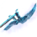
Frostfire AtgeirLet the flames begin to devour, while the ice claims whatever remains.
Slik får du den
- Lag: Svartsmie (nivå 4) av 1 ×
 Nord Atgeir, 20 × Bloodgold, 1 × Frostfire Essence · per oppgradering: 10 × Bloodgold, 1 × Frostfire Essence
Nord Atgeir, 20 × Bloodgold, 1 × Frostfire Essence · per oppgradering: 10 × Bloodgold, 1 × Frostfire Essence
 Frostfire Axe
Frostfire Axe
Burn it all to the ground, or freeze it in an eternal moment of destruction...
Slik får du den
- Lag: Svartsmie (nivå 4) av 1 ×
 Nord Axe, 20 × Bloodgold, 1 × Frostfire Essence · per oppgradering: 10 × Bloodgold, 1 × Frostfire Essence
Nord Axe, 20 × Bloodgold, 1 × Frostfire Essence · per oppgradering: 10 × Bloodgold, 1 × Frostfire Essence
 Frostfire Bow
Frostfire Bow
Keep your head cool as you draw, and then let your fury loose with your arrows.
Slik får du den
- Lag: Svartsmie (nivå 4) av 1 ×
 Nord Bow, 20 × Bloodgold, 1 × Frostfire Essence · per oppgradering: 10 × Bloodgold, 1 × Frostfire Essence
Nord Bow, 20 × Bloodgold, 1 × Frostfire Essence · per oppgradering: 10 × Bloodgold, 1 × Frostfire Essence
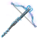
Frostfire CrossbowIf your enemies don't freeze as you take aim, they are sure to do so once they are hit.
Slik får du den
- Lag: Svartsmie (nivå 4) av 1 ×
 Nord Crossbow, 20 × Bloodgold, 1 × Frostfire Essence · per oppgradering: 10 × Bloodgold, 1 × Frostfire Essence
Nord Crossbow, 20 × Bloodgold, 1 × Frostfire Essence · per oppgradering: 10 × Bloodgold, 1 × Frostfire Essence
 Frostfire Dagger
Frostfire Dagger
A cut from this blade stings like ice, then burns like the flame.
Slik får du den
- Lag: Svartsmie (nivå 4) av 1 ×
 Nord Dagger, 20 × Bloodgold, 1 × Frostfire Essence · per oppgradering: 10 × Bloodgold, 1 × Frostfire Essence
Nord Dagger, 20 × Bloodgold, 1 × Frostfire Essence · per oppgradering: 10 × Bloodgold, 1 × Frostfire Essence
 Frostfire Greataxe
Frostfire Greataxe
Strike your foes with a frozen inferno!
Slik får du den
- Lag: Svartsmie (nivå 4) av 1 ×
 Nord Greataxe, 20 × Bloodgold, 1 × Frostfire Essence · per oppgradering: 10 × Bloodgold, 1 × Frostfire Essence
Nord Greataxe, 20 × Bloodgold, 1 × Frostfire Essence · per oppgradering: 10 × Bloodgold, 1 × Frostfire Essence
 Frostfire Greatsword
Frostfire Greatsword
The choice between a fiery end and a frozen one is simple: Both at the same time.
Slik får du den
- Lag: Svartsmie (nivå 4) av 1 ×
 Nord Greatsword, 20 × Bloodgold, 1 × Frostfire Essence · per oppgradering: 10 × Bloodgold, 1 × Frostfire Essence
Nord Greatsword, 20 × Bloodgold, 1 × Frostfire Essence · per oppgradering: 10 × Bloodgold, 1 × Frostfire Essence
 Frostfire Knucklechains
Frostfire Knucklechains
A slight risk of frostbite is inevitable.
Slik får du den
- Lag: Svartsmie (nivå 4) av 1 ×
 Nord Knucklechains, 20 × Bloodgold, 1 × Frostfire Essence · per oppgradering: 10 × Bloodgold, 1 × Frostfire Essence
Nord Knucklechains, 20 × Bloodgold, 1 × Frostfire Essence · per oppgradering: 10 × Bloodgold, 1 × Frostfire Essence
 Frostfire Mace
Frostfire Mace
Are those sparks that fly as this weapon finds its impact, or are they shards of ice?
Slik får du den
- Lag: Svartsmie (nivå 4) av 1 ×
 Nord Mace, 20 × Bloodgold, 1 × Frostfire Essence · per oppgradering: 10 × Bloodgold, 1 × Frostfire Essence
Nord Mace, 20 × Bloodgold, 1 × Frostfire Essence · per oppgradering: 10 × Bloodgold, 1 × Frostfire Essence
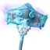
Frostfire SledgeIs it so cold that it's burning, or so hot that it's freezing?
Slik får du den
- Lag: Svartsmie (nivå 4) av 1 ×
 Nord Sledge, 20 × Bloodgold, 1 × Frostfire Essence · per oppgradering: 10 × Bloodgold, 1 × Frostfire Essence
Nord Sledge, 20 × Bloodgold, 1 × Frostfire Essence · per oppgradering: 10 × Bloodgold, 1 × Frostfire Essence
 Frostfire Spear
Frostfire Spear
Dipped in frozen flames, this spear spells certain doom.
Slik får du den
- Lag: Svartsmie (nivå 4) av 1 ×
 Nord Spear, 20 × Bloodgold, 1 × Frostfire Essence · per oppgradering: 10 × Bloodgold, 1 × Frostfire Essence
Nord Spear, 20 × Bloodgold, 1 × Frostfire Essence · per oppgradering: 10 × Bloodgold, 1 × Frostfire Essence
 Frostfire Sword
Frostfire Sword
Flames dance along this blade, but are they hot or cold?
Slik får du den
- Lag: Svartsmie (nivå 4) av 1 ×
 Nord Sword, 20 × Bloodgold, 1 × Frostfire Essence · per oppgradering: 10 × Bloodgold, 1 × Frostfire Essence
Nord Sword, 20 × Bloodgold, 1 × Frostfire Essence · per oppgradering: 10 × Bloodgold, 1 × Frostfire Essence
 Frostner
Frostner
De døde frykter sølv. Minn dem på hvorfor.
Slik får du den
- Lag: Smie (nivå 3) av 10 × Eldgammel bark, 30 × Sølv, 5 ×
 Ymirskjøtt, 5 ×
Ymirskjøtt, 5 ×  Iskjertel · per oppgradering: 15 × Sølv
Iskjertel · per oppgradering: 15 × Sølv
 Frostpil
Frostpil
Et skår av bitende is.
Slik får du den
- Lag: 20 × Sløydbenk (nivå 4) av 8 × Treverk, 4 ×
 Lavaglass, 2 × Fjær, 1 × Iskjertel
Lavaglass, 2 × Fjær, 1 × Iskjertel - Kister: Forlatt tømmerhytte · 5–10 × · 44 % sjanse, Fjellbrønn · 5–10 × · 44 % sjanse, Tårnruin · 5–10 × · 44 % sjanse
 Froststav
Froststav
En stav så kald som treårsvinteren som vil bety slutten på tiden selv.
Slik får du den
- Lag: Galderbord av 20 ×
 Yggdrasilsved, 4 × Iskjertel, 16 × Raffinert eiter · per oppgradering: 10 × Yggdrasilsved, 2 × Iskjertel, 8 × Raffinert eiter
Yggdrasilsved, 4 × Iskjertel, 16 × Raffinert eiter · per oppgradering: 10 × Yggdrasilsved, 2 × Iskjertel, 8 × Raffinert eiter
 Gallebombe
Gallebombe
Behandles med varsomhet.
Slik får du den
- Lag: 3 × Sløydbenk av 1 ×
 Sevje, 1 ×
Sevje, 1 ×  Galleblære, 3 × Kvae
Galleblære, 3 × Kvae
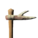
GevirhakkeDette redskapet er hardt nok til å bryte selv de mest hardføre steiner.
Slik får du den
- Lag: Sløydbenk av 10 × Treverk, 1 ×
 Hardt gevir
Hardt gevir
 Giftpil
Giftpil
Et bittert stikk fra langt hold.
Slik får du den
- Lag: 20 × Sløydbenk (nivå 3) av 8 × Treverk, 4 × Lavaglass, 2 × Fjær, 2 ×
 Slim
Slim - Kister: Sumpruin (tårn) · 10–15 × · 37 % sjanse, Gravfelt · 10–15 × · 37 % sjanse, Sunket krypt · 10–15 × · 36 % sjanse
 Glovarmt agn
Glovarmt agn
Enkelte fisker liker allerede varmt vann, men dette agnet tar temperaturen til kokepunktet.
Slik får du den
- Lag: 20 × Tilberedingsbenk av 20 × Fiskeagn, 1 ×
 Krigertrofé
Krigertrofé
Brukes til
- Agn for: Magmafisk
 Glødestav
Glødestav
Muspelheims hete virker nesten patetisk sammenlignet med hva denne staven kan gjøre...
Slik får du den
- Lag: Galderbord av 20 × Yggdrasilsved, 4 × Surtlingkjerne, 16 × Raffinert eiter · per oppgradering: 10 × Yggdrasilsved, 2 × Surtlingkjerne, 8 × Raffinert eiter
 Grappling Hook
Grappling Hook
For a dramatic entrance, or a swift retreat.
Slik får du den
- Lag: Svartsmie av 10 × Yggdrasilsved, 10 × Raffinert eiter, 4 ×
 Underkjeve, 1 ×
Underkjeve, 1 ×  Krok
Krok
 Grev
Grev
En bondes verktøy for bearbeiding av jorda.
Slik får du den
 Grov bue
Grov bue
En uflidd men brukbar bue.
Slik får du den
- Lag: Sløydbenk av 10 × Treverk, 8 × Restelær · per oppgradering: 5 × Treverk, 4 × Restelær, 1 × Hjorteskinn
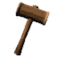
HammerMed denne i hånda, kan du bygge store saler og mektige murer.
Slik får du den
 Himminafl
Himminafl
Det er kanskje ikke en hammer, men selv Tor ville gått god for dette våpenet.
Slik får du den
- Lag: Svartsmie av 10 × Yggdrasilsved, 15 × Raffinert eiter, 5 × Sølv, 2 × Underkjeve · per oppgradering: 15 × Raffinert eiter, 5 × Sølv, 2 × Underkjeve
 Hoggtannspyd
Hoggtannspyd
Selv i døden lengter ulvens tann etter kjøtt.
Slik får du den
- Lag: Smie (nivå 3) av 10 × Eldgammel bark, 4 ×
 Ulvetann, 2 × Restelær, 2 × Sølv · per oppgradering: 5 × Eldgammel bark, 2 × Ulvetann, 1 × Restelær, 1 × Sølv
Ulvetann, 2 × Restelær, 2 × Sølv · per oppgradering: 5 × Eldgammel bark, 2 × Ulvetann, 1 × Restelær, 1 × Sølv
 Ildpil
Ildpil
Denne pila setter fyr på hva enn den treffer.
Slik får du den
- Lag: 20 × Sløydbenk (nivå 2) av 8 × Treverk, 8 × Kvae, 2 × Fjær
- Kister: Skipssetning (grav) · 10–15 × · 39 % sjanse
 Jegerbue
Jegerbue
Sirlig utformet med en sterk streng. En jegers lykke.
Slik får du den
- Lag: Smie av 10 × Finved, 20 × Jern, 10 × Fjær, 2 × Hjorteskinn · per oppgradering: 5 × Finved, 10 × Jern, 5 × Fjær, 2 × Hjorteskinn
 Jernatgeir
Jernatgeir
Bloddrikker, skalleknuser, dødsbringer.
Slik får du den
 Jernbolt
Jernbolt
Ei solid langpil i jern.
Slik får du den
 Jernhakke
Jernhakke
Et solid verktøy av herdet jern.
Slik får du den
 Jernklubbe
Jernklubbe
En jernklump på et treskaft.
Slik får du den
 Jernpil
Jernpil
Rustet med jern og mørke fjær.
Slik får du den
- Lag: 20 × Smie (nivå 2) av 8 × Treverk, 1 × Jern, 2 × Fjær
- Kister: Sumpruin (tårn) · 10–15 × · 37 % sjanse, Gravfelt · 10–15 × · 37 % sjanse, Sunket krypt · 10–15 × · 36 % sjanse
 Jernslegge
Jernslegge
En mektig hammer, en stormester verdig.
Slik får du den
- Lag: Smie (nivå 2) av 10 × Eldgammel bark, 30 × Jern, 4 × Ymirskjøtt, 1 ×
 Elitedraugtrofé · per oppgradering: 2 × Eldgammel bark, 15 × Jern, 2 × Ymirskjøtt
Elitedraugtrofé · per oppgradering: 2 × Eldgammel bark, 15 × Jern, 2 × Ymirskjøtt
 Jernsverd
Jernsverd
Den rette linja mellom liv og død går langs eggen på dette bladet.
Slik får du den
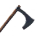
JernøksSkarp og sterk, en tømmerhoggers venn.
Slik får du den
 Jotunsbane
Jotunsbane
Selv ikke oldtidens jotner tålte det giftige bittet til dette våpenet.
Slik får du den
- Lag: Svartsmie av 5 × Yggdrasilsved, 15 × Jern, 3 × Galleblære, 10 × Raffinert eiter · per oppgradering: 10 × Jern, 1 × Galleblære, 1 × Raffinert eiter
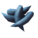
Kaldt agnDette agnet ser ikke ut som noe særlig, men for en fisk som er vant til kulde og mørke er det en skikkelig godbit.
Slik får du den
- Lag: 20 × Tilberedingsbenk av 20 × Fiskeagn, 1 ×
 Fenringtrofé
Fenringtrofé
Brukes til
- Agn for: Tetra
 Kjøttflekkere
Kjøttflekkere
Hvis klør funker for ulven, hvorfor ikke for en viking?
Slik får du den
- Lag: Smie (nivå 3) av 10 ×
 Fenrispels, 6 ×
Fenrispels, 6 ×  Fenrisklo, 10 × Sølv · per oppgradering: 1 × Fenrispels, 1 × Fenrisklo, 1 × Sølv
Fenrisklo, 10 × Sølv · per oppgradering: 1 × Fenrispels, 1 × Fenrisklo, 1 × Sølv
 Klissete agn
Klissete agn
Det lukter kanskje fælt, men fisken det tiltrekker er vant til mye verre.
Slik får du den
- Lag: 20 × Tilberedingsbenk av 20 × Fiskeagn, 1 ×
 Vederstyggelighetstrofé
Vederstyggelighetstrofé
Brukes til
- Agn for: Storsild
 Klossen
Klossen
Hvis slagkraften ikke er nok til å tvinge fienden i kne, vil kanskje røttene holde dem nede for deg.
Slik får du den
- Lag: Svartsmie (nivå 4) av 1 × Flammetallklubbe, 8 × Flammetall, 1 ×
 Jade · per oppgradering: 8 × Flammetall, 1 × Jade
Jade · per oppgradering: 8 × Flammetall, 1 × Jade
 Klubbe
Klubbe
Et primitivt men brukbart våpen.
Slik får du den
- Lag: uten arbeidsbenk av 6 × Treverk · per oppgradering: 5 × Beinrester
 Kløyvner
Kløyvner
Kløyv dine fienders hjerter i to.
Slik får du den
- Lag: Svartsmie (nivå 3) av 10 × Askeved, 6 × Flammetall, 2 × Asksvinskinn, 3 ×
 Beinhoggtann · per oppgradering: 5 × Askeved, 6 × Flammetall, 1 × Asksvinskinn, 3 × Beinhoggtann
Beinhoggtann · per oppgradering: 5 × Askeved, 6 × Flammetall, 1 × Asksvinskinn, 3 × Beinhoggtann
Brukes til
- Ingrediens i: Kløyvner den blodige, Kløyvner den stormende, Kløyvner den ville
 Kløyvner den blodige
Kløyvner den blodige
En liten ofring kreves for hvert slag...
Slik får du den
- Lag: Svartsmie (nivå 4) av 1 × Kløyvner, 6 × Flammetall, 1 × Blodstein · per oppgradering: 6 × Flammetall, 1 × Blodstein
 Kløyvner den stormende
Kløyvner den stormende
La torden flerre himmelen.
Slik får du den
- Lag: Svartsmie (nivå 4) av 1 × Kløyvner, 6 × Flammetall, 1 × Iolitt · per oppgradering: 6 × Flammetall, 1 × Iolitt
 Kløyvner den ville
Kløyvner den ville
Naturkrefterne bryter løs fra bakken, hvor enn spydet treffer.
Slik får du den
- Lag: Svartsmie (nivå 4) av 1 × Kløyvner, 6 × Flammetall, 1 × Jade · per oppgradering: 6 × Flammetall, 1 × Jade
 Knuser
Knuser
Denne mektige sleggen lengter etter å herje.
Slik får du den
- Lag: Svartsmie av 10 × Yggdrasilsved, 20 × Jern, 10 × Raffinert eiter · per oppgradering: 2 × Yggdrasilsved, 15 × Jern, 2 × Raffinert eiter
 Kobberkniv
Kobberkniv
En glitrende kobberkniv.
Slik får du den
- Lag: Smie av 2 × Treverk, 8 ×
 Kobber · per oppgradering: 4 × Kobber, 8 ×
Kobber · per oppgradering: 4 × Kobber, 8 ×  Grådvergsøye
Grådvergsøye
 Krom
Krom
Like dødelig som det er skinnende, og det er meget skinnende.
Slik får du den
- Lag: Svartsmie av 30 × Jern, 20 × Bronse, 5 ×
 Skjellskinn · per oppgradering: 15 × Jern, 10 × Bronse, 5 × Skjellskinn
Skjellskinn · per oppgradering: 15 × Jern, 10 × Bronse, 5 × Skjellskinn
 Krus
Krus
Skål!
Slik får du den
 Krystallstridsøks
Krystallstridsøks
Den er gjennomsiktig og gjennomskjærer alt.
Slik får du den
- Lag: Smie (nivå 3) av 40 × Eldgammel bark, 30 × Sølv, 10 × Krystall · per oppgradering: 5 × Eldgammel bark, 15 × Sølv
 Kullgjort bolt
Kullgjort bolt
Et kraftig bein fra en overarm, omformet til en dødelig bolt.
Slik får du den
- Lag: 20 × Svartsmie av 2 × Kullgjort bein, 8 × Askeved, 2 × Fjær
- Kister: Skipssetning (grav) · 5–11 × · 53 % sjanse, Landsby i nord · 5–11 × · 53 % sjanse, Hytte (Nord) · 5–11 × · 52 % sjanse, Tømmerhoggerleir · 5–11 × · 52 % sjanse, Skipsvrak (Nord) · 3–13 × · 17 % sjanse
 Kullgjort pil
Kullgjort pil
Denne pila er spikket fra et brent hoftebein. Den er hard som metall.
Slik får du den
- Lag: 20 × Svartsmie av 4 × Kullgjort bein, 2 × Fjær, 8 × Askeved
- Kister: Skipssetning (grav) · 5–11 × · 53 % sjanse, Landsby i nord · 5–11 × · 53 % sjanse, Hytte (Nord) · 5–11 × · 52 % sjanse, Tømmerhoggerleir · 5–11 × · 52 % sjanse, Mörk Borg · 5–11 × · 48 % sjanse, Skipsvrak (Nord) · 3–13 × · 17 % sjanse
Kullhogg
Gjenoppstått fra asken. Denne buen har en urokkelig styrke.
Slik får du den
- Lag: Svartsmie (nivå 3) av 10 × Askeved, 16 × Kullgjort bein, 5 × Flammetall, 5 × Beinhoggtann · per oppgradering: 5 × Askeved, 10 × Kullgjort bein, 5 × Flammetall, 5 × Beinhoggtann
Brukes til
- Ingrediens i: Blodhogg, Rothogg, Tordenhogg
 Langpil i flammetall
Langpil i flammetall
Skapt fra et av de hardeste metallene i hele Valheim. Denne langpila holder nok unna de fleste fiender.
Slik får du den
- Lag: 20 × Håndverksbenk av 10 × Askeved, 1 × Flammetall
 Langpil i svartmetall
Langpil i svartmetall
Disse massive langpilene kan punktere skinnet på selv de tøffeste fiender.
Slik får du den
- Lag: 20 × Håndverksbenk av 10 × Treverk, 1 ×
 Svartmetall
Svartmetall
 Langpil i tre
Langpil i tre
Kraftige trepiler som kan gi beskyttelse mot fiendtlige angrep.
Slik får du den
 Lavaglasspil
Lavaglasspil
Et skår av mørke.
Slik får du den
- Lag: 20 × Sløydbenk (nivå 3) av 8 × Treverk, 4 × Lavaglass, 2 × Fjær
- Kister: Stonehenge · 5–10 × · 62 % sjanse
 Lightning Strike
Lightning Strike
Simply point, and you shall summon the wrath of the sky.
Slik får du den
- Lag: Galderbord (nivå 3) av 10 × Bloodgold, 5 × Nornathread, 1 ×
 Thunderblood Essence · per oppgradering: 5 × Bloodgold, 2 × Nornathread, 1 × Thunderblood Essence
Thunderblood Essence · per oppgradering: 5 × Bloodgold, 2 × Nornathread, 1 × Thunderblood Essence - Stek: Froststøper av
 Cast: Lightning Strike
Cast: Lightning Strike
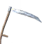
LjåMed det rette redskapet blir jobben så mye lettere.
Slik får du den
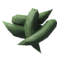
Mosete agnDøde troll i skogen tiltrekker seg ofte en fisk eller to, få fart på sakene med dette agnet!
Slik får du den
- Lag: 20 × Tilberedingsbenk av 20 × Fiskeagn, 1 ×
 Trolltrofé
Trolltrofé
Brukes til
- Agn for: Trollfisk
 Nidhogg
Nidhogg
Navngitt etter den onde dragen som gnager på røttene til verdenstreet. Dette sverdet er en sikker død for dem som møter det.
Slik får du den
- Lag: Svartsmie (nivå 3) av 3 × Kullgjort bein, 12 × Flammetall, 2 × Asksvinskinn · per oppgradering: 10 × Flammetall, 2 × Asksvinskinn
Brukes til
- Ingrediens i: Nidhogg den blodige, Nidhogg den tordnende, Nidhogg den ville
 Nidhogg den blodige
Nidhogg den blodige
Hvis du blør, gjør dine fiender det samme.
Slik får du den
- Lag: Svartsmie (nivå 4) av 1 × Nidhogg, 6 × Flammetall, 1 × Blodstein · per oppgradering: 6 × Flammetall, 1 × Blodstein
 Nidhogg den tordnende
Nidhogg den tordnende
Lynets kraft danser langs klingen på dette sverdet, et løfte om hva som er i vente.
Slik får du den
- Lag: Svartsmie (nivå 4) av 1 × Nidhogg, 6 × Flammetall, 1 × Iolitt · per oppgradering: 6 × Flammetall, 1 × Iolitt
 Nidhogg den ville
Nidhogg den ville
Kvel fienden i røtter, slik som klingens navnebror.
Slik får du den
- Lag: Svartsmie (nivå 4) av 1 × Nidhogg, 6 × Flammetall, 1 × Jade · per oppgradering: 6 × Flammetall, 1 × Jade
Nord Atgeir
The edge of this weapon is as deadly as it is shiny.
Slik får du den
- Lag: Svartsmie (nivå 4) av 20 × Bloodgold, 1 ×
 Mould: Nord Atgeir, 10 ×
Mould: Nord Atgeir, 10 ×  Tømmerved · per oppgradering: 10 × Bloodgold, 5 × Tømmerved
Tømmerved · per oppgradering: 10 × Bloodgold, 5 × Tømmerved - Stek: Froststøper av
 Cast: Nord Atgeir
Cast: Nord Atgeir
Brukes til
- Ingrediens i: Frostfire Atgeir, Thunderblood Atgeir
Nord Axe
A finely detailed axe, for finely cutting down your enemies.
Slik får du den
- Lag: Svartsmie (nivå 4) av 20 × Bloodgold, 1 ×
 Mould: Nord Axe, 10 × Tømmerved · per oppgradering: 10 × Bloodgold, 5 × Tømmerved
Mould: Nord Axe, 10 × Tømmerved · per oppgradering: 10 × Bloodgold, 5 × Tømmerved - Stek: Froststøper av
 Cast: Nord Axe
Cast: Nord Axe
Brukes til
- Ingrediens i: Frostfire Axe, Thunderblood Axe
Nord Bow
This bow shall find its target with a golden precision.
Slik får du den
- Lag: Svartsmie (nivå 4) av 20 × Bloodgold, 1 ×
 Mould: Nord Bow, 10 × Tømmerved · per oppgradering: 10 × Bloodgold, 5 × Tømmerved
Mould: Nord Bow, 10 × Tømmerved · per oppgradering: 10 × Bloodgold, 5 × Tømmerved - Stek: Froststøper av
 Cast: Nord Bow
Cast: Nord Bow
Brukes til
- Ingrediens i: Frostfire Bow, Thunderblood Bow
Nord Crossbow
An incredible force is bound to this weapon, waiting to be unleashed.
Slik får du den
- Lag: Svartsmie (nivå 4) av 20 × Bloodgold, 1 ×
 Mould: Nord Crossbow, 10 × Tømmerved · per oppgradering: 10 × Bloodgold, 5 × Tømmerved
Mould: Nord Crossbow, 10 × Tømmerved · per oppgradering: 10 × Bloodgold, 5 × Tømmerved - Stek: Froststøper av
 Cast: Nord Crossbow
Cast: Nord Crossbow
Brukes til
- Ingrediens i: Frostfire Crossbow, Thunderblood Crossbow
Nord Dagger
A flash of gold is the last thing your foes will ever see.
Slik får du den
- Lag: Svartsmie (nivå 4) av 20 × Bloodgold, 1 ×
 Mould: Nord Dagger, 10 × Tømmerved · per oppgradering: 10 × Bloodgold, 5 × Tømmerved
Mould: Nord Dagger, 10 × Tømmerved · per oppgradering: 10 × Bloodgold, 5 × Tømmerved - Stek: Froststøper av
 Cast: Nord Dagger
Cast: Nord Dagger
Brukes til
- Ingrediens i: Frostfire Dagger, Thunderblood Dagger
Nord Greataxe
A mighty axe fit for a mighty warrior.
Slik får du den
- Lag: Svartsmie (nivå 4) av 20 × Bloodgold, 1 ×
 Mould: Nord Greataxe, 10 × Tømmerved · per oppgradering: 10 × Bloodgold, 5 × Tømmerved
Mould: Nord Greataxe, 10 × Tømmerved · per oppgradering: 10 × Bloodgold, 5 × Tømmerved - Stek: Froststøper av
 Cast: Nord Greataxe
Cast: Nord Greataxe
Brukes til
- Ingrediens i: Frostfire Greataxe, Thunderblood Greataxe
Nord Greatsword
A striking weapon, both visually and lethally.
Slik får du den
- Lag: Svartsmie (nivå 4) av 20 × Bloodgold, 1 ×
 Mould: Nord Greatsword, 2 ×
Mould: Nord Greatsword, 2 ×  Frozen Branch · per oppgradering: 10 × Bloodgold, 1 × Frozen Branch
Frozen Branch · per oppgradering: 10 × Bloodgold, 1 × Frozen Branch - Stek: Froststøper av
 Cast: Nord Greatsword
Cast: Nord Greatsword
Brukes til
- Ingrediens i: Frostfire Greatsword, Thunderblood Greatsword
Nord Knucklechains
Wrap your fists in the hardest of metals, to ensure your foes feel the strength behind your blows.
Slik får du den
- Lag: Svartsmie (nivå 4) av 20 × Bloodgold, 1 ×
 Mould: Nord Knucklechains, 10 × Tømmerved · per oppgradering: 10 × Bloodgold, 5 × Tømmerved
Mould: Nord Knucklechains, 10 × Tømmerved · per oppgradering: 10 × Bloodgold, 5 × Tømmerved - Stek: Froststøper av
 Cast: Nord Knucklechains
Cast: Nord Knucklechains
Brukes til
- Ingrediens i: Frostfire Knucklechains, Thunderblood Knucklechains
Nord Mace
Hit hard and fast, and leave your foe no time to recover.
Slik får du den
- Lag: Svartsmie (nivå 4) av 20 × Bloodgold, 1 ×
 Mould: Nord Mace, 10 × Tømmerved · per oppgradering: 10 × Bloodgold, 5 × Tømmerved
Mould: Nord Mace, 10 × Tømmerved · per oppgradering: 10 × Bloodgold, 5 × Tømmerved - Stek: Froststøper av
 Cast: Nord Mace
Cast: Nord Mace
Brukes til
- Ingrediens i: Frostfire Mace, Thunderblood Mace
Nord Sledge
With this weapon, your blows will be heavy as that of a troll.
Slik får du den
- Lag: Svartsmie (nivå 4) av 20 × Bloodgold, 1 ×
 Mould: Nord Sledge, 10 × Tømmerved · per oppgradering: 10 × Bloodgold, 5 × Tømmerved
Mould: Nord Sledge, 10 × Tømmerved · per oppgradering: 10 × Bloodgold, 5 × Tømmerved - Stek: Froststøper av
 Cast: Nord Sledge
Cast: Nord Sledge
Brukes til
- Ingrediens i: Frostfire Sledge, Thunderblood Sledge
Nord Spear
A golden opportunity to strike.
Slik får du den
- Lag: Svartsmie (nivå 4) av 20 × Bloodgold, 1 ×
 Mould: Nord Spear, 10 × Tømmerved · per oppgradering: 10 × Bloodgold, 5 × Tømmerved
Mould: Nord Spear, 10 × Tømmerved · per oppgradering: 10 × Bloodgold, 5 × Tømmerved - Stek: Froststøper av
 Cast: Nord Spear
Cast: Nord Spear
Brukes til
- Ingrediens i: Frostfire Spear, Thunderblood Spear
Nord Sword
Even in the faintest sunlight, this weapon glimmers.
Slik får du den
- Lag: Svartsmie (nivå 4) av 20 × Bloodgold, 1 ×
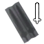
Mould: Nord Sword, 10 ×Tømmerved · per oppgradering: 10 × Bloodgold, 5 × Tømmerved - Stek: Froststøper av
 Cast: Nord Sword
Cast: Nord Sword
Brukes til
- Ingrediens i: Frostfire Sword, Thunderblood Sword
 Northern Vengeance
Northern Vengeance
A caged snowflake, endless patterns emerging from within...
Slik får du den
- Lag: Galderbord (nivå 3) av 10 ×
 Is, 5 × Nornathread, 1 ×
Is, 5 × Nornathread, 1 ×  Hexen Trophy · per oppgradering: 5 × Is, 2 × Nornathread
Hexen Trophy · per oppgradering: 5 × Is, 2 × Nornathread - Stek: Froststøper av
 Cast: Northern Vengeance
Cast: Northern Vengeance
 Odins mjødhorn
Odins mjødhorn
Odins mektigste krigere fortjener den flotteste mjøden.
Slik får du den
- Lag: Sløydbenk av 4 × Finved, 1 × Hjortetrofé, 2 × Kvae
 Pinnsvinet
Pinnsvinet
Et dødelig våpen, dekket av djevelske pigger.
Slik får du den
River
Riv i stykker fiender, enkelt som bare det.
Slik får du den
- Lag: Svartsmie (nivå 3) av 10 × Askeved, 8 × Flammetall, 2 × Morgensene, 4 × Beinhoggtann · per oppgradering: 5 × Askeved, 4 × Flammetall, 1 × Morgensene, 4 × Beinhoggtann
Brukes til
- Ingrediens i: Blodriver, Rotriver, Stormriver
 Rothogg
Rothogg
Som ei grein som strekker seg mot sola, lengter denne buen etter blod.
Slik får du den
- Lag: Svartsmie (nivå 4) av 1 × Kullhogg, 5 × Flammetall, 1 × Jade · per oppgradering: 5 × Flammetall, 1 × Jade
 Rotriver
Rotriver
Hvis en bolt fra denne ikke er nok til å stoppe fiendene dine, vil nok røttene fra bakken gjøre det for deg.
Slik får du den
- Lag: Svartsmie (nivå 4) av 1 × River, 8 × Flammetall, 1 × Jade · per oppgradering: 8 × Flammetall, 1 × Jade
 Ryggradriver
Ryggradriver
Du får kanskje ryggsmerter av å bruke denne buen, men det er verdt det.
Slik får du den
- Lag: Svartsmie av 10 × Finved, 40 × Beinrester, 10 × Raffinert eiter · per oppgradering: 5 × Finved, 20 × Beinrester
 Røykbombe
Røykbombe
Alle vet at man ikke kan puste inn røyk.
Slik får du den
- Lag: 10 × Sløydbenk av 1 ×
 Røyksopp, 1 × Asksvinblære
Røyksopp, 1 × Asksvinblære
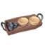
ServeringsbrettDekk på bordet med all slags mat og drikke, og imponer gjestene dine med et skikkelig festmåltid. Når du har forsynt deg av et festmåltid, vil du ikke få tilbake noen ressurser hvis du fjerner det.
Slik får du den
- Kjøp: Sumpheksa · 140 mynter
 Skallbolt
Skallbolt
En tung og solid bolt.
Slik får du den
 Skallesplitter
Skallesplitter
Finner en skalle å splitte selv i den tjukkeste tåka.
Slik får du den
- Lag: Svartsmie av 30 × Jern, 15 × Yggdrasilsved, 10 × Raffinert eiter · per oppgradering: 15 × Jern, 5 × Yggdrasilsved
 Skallpil
Skallpil
Tung og spiss, denne vil gjøre vondt.
Slik får du den
- Lag: 20 × Svartsmie av 4 ×
 Skall, 2 × Fjær, 8 × Treverk
Skall, 2 × Fjær, 8 × Treverk - Kister: Råttent hull (Morgen) · 3–12 × · 46 % sjanse
 Skallspyd
Skallspyd
Slipt til en taggete perfeksjon, er dette spydet dødelig som få.
Slik får du den
- Lag: Svartsmie av 10 × Yggdrasilsved, 4 × Skall, 2 × Underkjeve · per oppgradering: 5 × Yggdrasilsved, 4 × Skall, 1 × Underkjeve
 Skjoldstav
Skjoldstav
For en liten blodofring vil den beskytte maneren i et magisk skall.
Slik får du den
- Lag: Galderbord av 20 × Yggdrasilsved, 4 ×
 Blodpropp, 16 × Raffinert eiter · per oppgradering: 10 × Yggdrasilsved, 2 × Blodpropp, 8 × Raffinert eiter
Blodpropp, 16 × Raffinert eiter · per oppgradering: 10 × Yggdrasilsved, 2 × Blodpropp, 8 × Raffinert eiter
 Skoll og Hate
Skoll og Hate
Stikk en gang for de som har forrådt deg, og to ganger for de du hater.
Slik får du den
- Lag: Svartsmie av 4 × Finved, 10 × Jern, 10 × Svartmetall · per oppgradering: 4 × Jern, 4 × Svartmetall
 Slaktekniv
Slaktekniv
Slaktekniven er spesiallagd for slakting av tamme dyr.
Slik får du den
 Slimbombe
Slimbombe
Stanken er uutholdelig...
Slik får du den
 Snøball
Snøball
Ser ut som det er perfekt til å kaste...
Slik får du den
- Plukk opp: Ligger på bakken eller vokser vilt · Norddjupet
- Slippes av: Grådverg · Norddjupet
- Lag: 10 × uten arbeidsbenk av 5 × Is
Brukes til
- Byggemateriale til: Snølykt
 Snøskuffel
Snøskuffel
Nyttig å måke unna den dypeste snøen med.
Slik får du den
- Lag: Svartsmie (nivå 3) av 5 × Finved, 4 × Flammetall, 2 ×
 Glør · per oppgradering: 1 × Finved, 10 × Flammetall
Glør · per oppgradering: 1 × Finved, 10 × Flammetall
 Spirit Caller
Spirit Caller
Summon otherworldly aid. It only costs a drop of your blood...
Slik får du den
- Lag: Galderbord (nivå 3) av 8 × Frozen Branch, 5 × Nornathread, 1 ×
 Moose Trophy · per oppgradering: 4 × Frozen Branch, 2 × Nornathread
Moose Trophy · per oppgradering: 4 × Frozen Branch, 2 × Nornathread - Stek: Froststøper av
 Cast: Spirit Caller
Cast: Spirit Caller
 Steinøks
Steinøks
Ei uflidd øks for trefelling.
Slik får du den
 Stikkende agn
Stikkende agn
Du er ikke immun mot dødsmyggens stikk, og fiskene her er ikke immun mot denne fristelsen!
Slik får du den
- Lag: 20 × Tilberedingsbenk av 20 × Fiskeagn, 1 ×
 Fælingtrofé
Fælingtrofé
Brukes til
- Agn for: Abbor
 Stjerneskudd
Stjerneskudd
Det er en pinne som gnistrer. Så fint!
Slik får du den
- Kjøp: Hildir · 150 mynter
 Stormriver
Stormriver
Boltene skjærer seg gjennom fiender, som en ustoppelig vind.
Slik får du den
- Lag: Svartsmie (nivå 4) av 1 × River, 8 × Flammetall, 1 × Iolitt · per oppgradering: 8 × Flammetall, 1 × Iolitt
 Stormstjerne
Stormstjerne
Spesielt effektiv når det er overskyet.
Slik får du den
- Lag: Svartsmie (nivå 4) av 1 × Flammetallklubbe, 8 × Flammetall, 1 × Iolitt · per oppgradering: 8 × Flammetall, 1 × Iolitt
 Stridsøks
Stridsøks
Skallesplitteren, en krigers ynde.
Slik får du den
- Lag: Smie (nivå 2) av 30 × Eldgammel bark, 35 × Jern, 4 × Restelær · per oppgradering: 5 × Eldgammel bark, 15 × Jern
 Svartmetallatgeir
Svartmetallatgeir
Ei grim hoggøks av robust svart metall.
Slik får du den
- Lag: Smie (nivå 4) av 10 × Finved, 30 × Svartmetall, 5 ×
 Lintråd · per oppgradering: 15 × Svartmetall, 5 × Lintråd
Lintråd · per oppgradering: 15 × Svartmetall, 5 × Lintråd
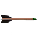
SvartmetallboltEn glinsende bolt av mørkt metall.
Slik får du den
- Lag: 20 × Svartsmie (nivå 2) av 2 × Svartmetall, 8 × Treverk, 2 × Fjær
 Svartmetallhakke
Svartmetallhakke
Ei god og sterk hakke lagd av glinsende svart metall.
Slik får du den
- Lag: Smie (nivå 2) av 3 × Yggdrasilsved, 25 × Svartmetall · per oppgradering: 1 × Yggdrasilsved, 15 × Svartmetall
 Svartmetallkniv
Svartmetallkniv
Et mørkets blad. Sterkt og skarpt.
Slik får du den
- Lag: Smie (nivå 4) av 4 × Finved, 10 × Svartmetall, 5 × Lintråd · per oppgradering: 4 × Svartmetall, 5 × Lintråd
 Svartmetallsverd
Svartmetallsverd
En vakker dødsbringer. Den fanger lyset med en grønnfarget glød.
Slik får du den
- Lag: Smie (nivå 4) av 2 × Finved, 20 × Svartmetall, 5 × Lintråd · per oppgradering: 10 × Svartmetall, 5 × Lintråd
 Svartmetalløks
Svartmetalløks
Ei perfekt balansert øks, smidd av mørkt metall med en smaragdfarget glans.
Slik får du den
- Lag: Smie (nivå 4) av 6 × Finved, 20 × Svartmetall, 5 × Lintråd · per oppgradering: 10 × Svartmetall, 5 × Lintråd
 Svartmetellsstridsøks
Svartmetellsstridsøks
Grønt er det siste synet fiendene dine ser, før du kløyver dem i to.
Slik får du den
- Lag: Smie (nivå 4) av 10 × Finved, 30 × Svartmetall, 5 × Lintråd · per oppgradering: 15 × Svartmetall, 5 × Lintråd
 Sølvdolk
Sølvdolk
Et gruelig stykke smerte.
Slik får du den
 Sølvpil
Sølvpil
En nål for å roe fredløse ånder.
Slik får du den
 Sølvsverd
Sølvsverd
Det reneste metall. Intet urent kan fordra dens berøring.
Slik får du den
 Thunderblood Atgeir
Thunderblood Atgeir
The heavens shall sound their praise as you make your enemies bleed.
Slik får du den
- Lag: Svartsmie (nivå 4) av 1 × Nord Atgeir, 20 × Bloodgold, 1 × Thunderblood Essence · per oppgradering: 10 × Bloodgold, 1 × Thunderblood Essence
 Thunderblood Axe
Thunderblood Axe
As this axe cuts through wood and blood alike, a resounding thunderous crack shall be heard throughout the land.
Slik får du den
- Lag: Svartsmie (nivå 4) av 1 × Nord Axe, 20 × Bloodgold, 1 × Thunderblood Essence · per oppgradering: 10 × Bloodgold, 1 × Thunderblood Essence
 Thunderblood Bow
Thunderblood Bow
Lightning dances along the string, waiting to be unleashed.
Slik får du den
- Lag: Svartsmie (nivå 4) av 1 × Nord Bow, 20 × Bloodgold, 1 × Thunderblood Essence · per oppgradering: 10 × Bloodgold, 1 × Thunderblood Essence
 Thunderblood Crossbow
Thunderblood Crossbow
The bow is pulled taut with unreleased power, like the air before a lightning strike.
Slik får du den
- Lag: Svartsmie (nivå 4) av 1 × Nord Crossbow, 20 × Bloodgold, 1 × Thunderblood Essence · per oppgradering: 10 × Bloodgold, 1 × Thunderblood Essence
 Thunderblood Dagger
Thunderblood Dagger
The blade is already bloodied, yet it sparks in want of more.
Slik får du den
- Lag: Svartsmie (nivå 4) av 1 × Nord Dagger, 20 × Bloodgold, 1 × Thunderblood Essence · per oppgradering: 10 × Bloodgold, 1 × Thunderblood Essence
 Thunderblood Greataxe
Thunderblood Greataxe
As you cleave your foes in two, their blood shall sing like a thunderstorm.
Slik får du den
- Lag: Svartsmie (nivå 4) av 1 × Nord Greataxe, 20 × Bloodgold, 1 × Thunderblood Essence · per oppgradering: 10 × Bloodgold, 1 × Thunderblood Essence
 Thunderblood Greatsword
Thunderblood Greatsword
Anyone wielding this weapon is sure to be very frightening indeed.
Slik får du den
- Lag: Svartsmie (nivå 4) av 1 × Nord Greatsword, 20 × Bloodgold, 1 × Thunderblood Essence · per oppgradering: 10 × Bloodgold, 1 × Thunderblood Essence
 Thunderblood Knucklechains
Thunderblood Knucklechains
A fury comes over you as you fight with these weapons, your blood roaring like thunder in your ears... It seems appropriate.
Slik får du den
- Lag: Svartsmie (nivå 4) av 1 × Nord Knucklechains, 20 × Bloodgold, 1 × Thunderblood Essence · per oppgradering: 10 × Bloodgold, 1 × Thunderblood Essence
 Thunderblood Mace
Thunderblood Mace
A weapon to rival perhaps even that of the thunder god himself...
Slik får du den
- Lag: Svartsmie (nivå 4) av 1 × Nord Mace, 20 × Bloodgold, 1 × Thunderblood Essence · per oppgradering: 10 × Bloodgold, 1 × Thunderblood Essence
 Thunderblood Sledge
Thunderblood Sledge
As this weapon strikes true, the blow shall echo throughout the world...
Slik får du den
- Lag: Svartsmie (nivå 4) av 1 × Nord Sledge, 20 × Bloodgold, 1 × Thunderblood Essence · per oppgradering: 10 × Bloodgold, 1 × Thunderblood Essence
 Thunderblood Spear
Thunderblood Spear
May it strike like lightning, quick and fierce.
Slik får du den
- Lag: Svartsmie (nivå 4) av 1 × Nord Spear, 20 × Bloodgold, 1 × Thunderblood Essence · per oppgradering: 10 × Bloodgold, 1 × Thunderblood Essence
 Thunderblood Sword
Thunderblood Sword
As the blood runs along the blade, it awakens the storm within.
Slik får du den
- Lag: Svartsmie (nivå 4) av 1 × Nord Sword, 20 × Bloodgold, 1 × Thunderblood Essence · per oppgradering: 10 × Bloodgold, 1 × Thunderblood Essence
 Tohånds tresverd
Tohånds tresverd
Vær forsiktig med den er du snill?
Slik får du den
- Kister: Dvergr-vakttårn (ruin) · 14 % sjanse, Fjellnål · 14 % sjanse, Infisert gruve · 12 % sjanse
 Tordenhogg
Tordenhogg
La pilene dine fly så fort som lynet slår.
Slik får du den
- Lag: Svartsmie (nivå 4) av 1 × Kullhogg, 5 × Flammetall, 1 × Iolitt · per oppgradering: 5 × Flammetall, 1 × Iolitt
 Tordnende berserkøkser
Tordnende berserkøkser
Blodbadet sprer seg omkring deg når du bærer disse øksene. Selv Tor ville vært stolt.
Slik får du den
- Lag: Svartsmie (nivå 4) av 1 × Berserkøkser, 5 × Flammetall, 1 × Iolitt · per oppgradering: 5 × Flammetall, 1 × Iolitt
 Treatgeir
Treatgeir
Den gjør ikke så vondt, men den rekker langt!
Slik får du den
- Kister: Fuling-hytte · 17 % sjanse, Steintårn (Fjell) · 17 % sjanse, Ruin · 17 % sjanse, Hildir-oppdrag: Forseglet tårn · 17 % sjanse, Fuling-landsby · 17 % sjanse
 Treklubbe
Treklubbe
Man må lure på hvorfor noen lagde denne, isteden for en enkel klubbe.
Slik får du den
- Kister: Draugr-landsby · 1–4 × · 32 % sjanse, Kampruin · 6 % sjanse
 Trekniv
Trekniv
Noen ville sagt at denne kniven egner seg bedre til smør.
Slik får du den
- Kister: Skipssetning (grav) · 8,7 % sjanse
 Trepil
Trepil
Ei pil av spikket tre.
Slik får du den
- Lag: 20 × Sløydbenk av 8 × Treverk
 Treslegge
Treslegge
Denne burde nok gjøre mer skade enn den gjør.
Slik får du den
- Kister: Sumpruin (tårn) · 20 % sjanse, Gravfelt · 20 % sjanse
 Trespyd
Trespyd
Denne er like skarp som et ekte spyd, hvis et ekte spyd var lagd av tre.
Slik får du den
- Kister: Tårnruin · 11 % sjanse, Ruin · 11 % sjanse, Sumphytte · 11 % sjanse, Sunket tårnruin · 11 % sjanse, Trollhule · 11 % sjanse, Steinhusruin · 11 % sjanse
 Trestridsøks
Trestridsøks
Skremmende, men ikke fullt så skremmende som den ekte.
Slik får du den
- Kister: Forlatt tømmerhytte · 10 % sjanse, Fjellbrønn · 10 % sjanse, Tårnruin · 10 % sjanse
 Tresverd
Tresverd
For det meste ufarlig, med mindre du er veldig iherdig.
Slik får du den
 Treøks
Treøks
Hvis denne øksa hogget ved, ville ikke det vært rart?
Slik får du den
- Kister: Skipssetning (grav) · 8,7 % sjanse
 Trollstav
Trollstav
Tilkall død og ødeleggelse, gjennom et rasende beist.
Slik får du den
- Lag: Galderbord (nivå 2) av 15 × Kullgjort bein, 1 × Trolltrofé, 3 × Flammetall, 1 × Blodstein · per oppgradering: 5 × Kullgjort bein, 1 × Trolltrofé, 3 × Flammetall, 1 × Blodstein
 Tungt agn
Tungt agn
Dette agnet synker dypt, dypt nok til å lokke fiskene som svømmer langs havets bunn.
Slik får du den
- Lag: 20 × Tilberedingsbenk av 20 × Fiskeagn, 1 ×
 Sjøormtrofé
Sjøormtrofé
Brukes til
- Agn for: Juvelabbor, Tunfisk
 Tåkete agn
Tåkete agn
Et agn for å lede fisken til deg gjennom uklart vann.
Slik får du den
Brukes til
 Tåkevandrer
Tåkevandrer
Den svake gløden ser ut til å skjære gjennom tåka.
Slik får du den
- Lag: Svartsmie av 3 × Finved, 15 × Jern, 10 × Raffinert eiter, 3 ×
 Lyktemann · per oppgradering: 10 × Jern, 5 × Raffinert eiter, 1 × Lyktemann
Lyktemann · per oppgradering: 10 × Jern, 5 × Raffinert eiter, 1 × Lyktemann
 Vemmelbeinsklør
Vemmelbeinsklør
Disse klørne river kjøtt og bein som om det var det samme.
Slik får du den
- Lag: Smie (nivå 4) av 2 × Bjørneskinn, 2 ×
 Vemmelig brystkasse, 2 × Svartmetall, 4 × Lintråd · per oppgradering: 1 × Bjørneskinn, 1 × Vemmelig brystkasse, 1 × Svartmetall, 2 × Lintråd
Vemmelig brystkasse, 2 × Svartmetall, 4 × Lintråd · per oppgradering: 1 × Bjørneskinn, 1 × Vemmelig brystkasse, 1 × Svartmetall, 2 × Lintråd
 Villbane
Villbane
Klingen samarbeider med urgamle naturkrefter, ute etter død og ødeleggelse.
Slik får du den
- Lag: Svartsmie (nivå 4) av 1 × Bane, 15 × Flammetall, 1 × Jade · per oppgradering: 15 × Flammetall, 1 × Jade
 Ville berserkøkser
Ville berserkøkser
Villdyret inni deg tar over, og naturen rundt deg strekker ut en hjelpende hånd.
Slik får du den
- Lag: Svartsmie (nivå 4) av 1 × Berserkøkser, 5 × Flammetall, 1 × Jade · per oppgradering: 5 × Flammetall, 1 × Jade
 Villstav
Villstav
Urgamle naturkrefter dveler i denne staven, og venter på å bli sluppet fri.
Slik får du den
- Lag: Galderbord (nivå 2) av 15 × Askeved, 10 ×
 Felehode, 3 × Himmelsk fjær, 1 × Jade · per oppgradering: 5 × Askeved, 2 × Felehode, 3 × Himmelsk fjær, 1 × Jade
Felehode, 3 × Himmelsk fjær, 1 × Jade · per oppgradering: 5 × Askeved, 2 × Felehode, 3 × Himmelsk fjær, 1 × Jade
 Ørlige økser
Ørlige økser
Mektige våpen fra en tid lenge lenge siden, da verden enda var ung og uferdig...
Slik får du den
- Lag: Sløydbenk av 4 × Treverk, 1 ×
 Snodig øksehode, 1 ×
Snodig øksehode, 1 ×  Mystisk øksehode · per oppgradering: 2 × Treverk, 2 × Restelær
Mystisk øksehode · per oppgradering: 2 × Treverk, 2 × Restelær